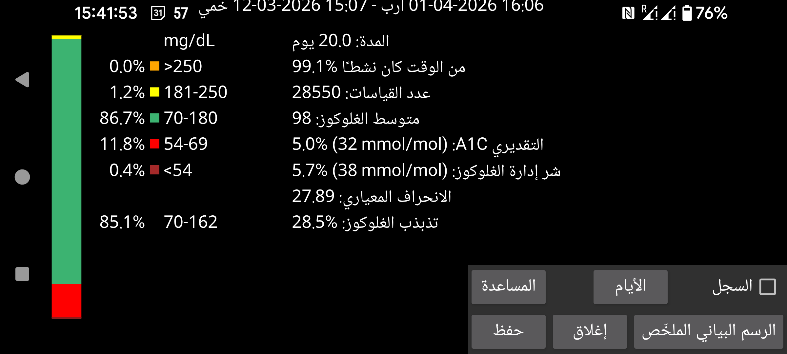
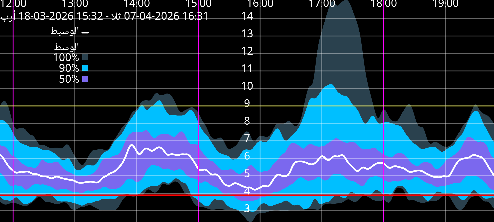

ar be de es fr hi it ja nl pl pt ru tr uk uz zh en
بعض الإحصاءات مأخوذة من AGP مع بعض التعديلات البسيطة.
يمكن تعديل عدد الأيام التي يجري تحليلها بالضغط على زر الأيام. تنتهي الفترة عند وقت موضع نهاية الشاشة وتمتد إلى الخلف بعدد الأيام المحدد. وتعتمد جميع البيانات فقط على قيم الغلوكوز التي تُستقبل كل دقيقة عبر البلوتوث من المستشعر (ويُسمّى ذلك البث في Juggluco).
على يسار الشاشة تظهر نسبة القياسات التي تقع ضمن نطاقات غلوكوز معيّنة. وتُعرض النطاقات القياسية دائمًا. وعند تحديد نطاق مستهدف غير قياسي في القائمة اليسرى->الإعدادات->العرض، يُعرض الوقت ضمن ذلك النطاق المستهدف أسفل النطاقات القياسية.
النسبة المئوية للوقت الذي استقبل فيه Juggluco قيم الغلوكوز من المستشعر.
يقدّر HbA1c باستخدام صيغة قديمة انطلاقًا من متوسط الغلوكوز (Nathan وآخرون، 2008). راجع https://professional.diabetes.org/diapro/glucose_calc لآلة حاسبة.
يُعرض هنا في حال كان المستخدم يبحث عن القيمة التي يعرضها تطبيق Libre 2 من Abbott. ويُعد GMI بديلًا أحدث لهذا المؤشر منذ عام 2018.
يُحسب من متوسط الغلوكوز باستخدام صيغة شائعة الاستعمال (راجع https://www.jaeb.org/gmi/). وهو تنبؤ تجريبي لقيمة HbA1c (ويُسمّى أيضًا A1c)، ويُعرض بالنسبة المئوية وبوحدة mmol/mol. وبالنسبة لي شخصيًا، فإن A1C المقدّر يتنبأ بشكل أفضل من GMI، لكن تطبيق Libre 3 من Abbott يستخدم GMI.
معامل الاختلاف %CV=(SD/mean)*100% بوصفه مقياسًا لتباين الغلوكوز. وكلما ارتفع معامل الاختلاف، كانت قيم الغلوكوز أبعد عن المتوسط.
يعرض هذا تقريرًا عن قيم الغلوكوز لديك خلال الأيام المحددة. وهو يحتوي على إحصاءات، ورسم بياني نظرة عامة، وصورة لأيام منفصلة. يمكنك طباعته بصيغة PDF وإرساله بالبريد الإلكتروني إلى مقدم الرعاية الصحية. ولأجل ذلك يجب أن تكون قد فعّلت: القائمة اليسرى→الإعدادات→تبادل البيانات→خادم الويب. فهو يفتح الرابط http://127.0.0.1:17580/x/report في متصفح الويب.
(يظهر فقط عندما تكون هناك قيم غلوكوز من البث متاحة لمدة 9 أيام على الأقل).
تُؤخذ جميع قيم غلوكوز البث في هذه الفترة لرسم مخطط مركّب يوضّح لكل دقيقة من اليوم كيف توزعت قيم الغلوكوز. ويُظهر خط الوسيط الأسود أو الأبيض قيمة الغلوكوز التي تقع دونها 50 بالمئة من القيم في كل دقيقة من اليوم. وتمثل أفتح درجة من الأزرق المجال الذي تقع فيه جميع القيم. وتمثل الدرجة الزرقاء الأغمق قليلًا المجال حول الوسيط الذي تقع فيه 90% من القيم. أما أغمق درجة من الأزرق فتمثل المجال حول الوسيط الذي يضم 50% من القيم. وإذا رأيت حدود هذه المجالات على هيئة خطوط، فيمكنك أيضًا تفسيرها كما يلي: تحت أدنى خط توجد 0% من القيم، وتحت الخط الثاني من الأسفل (بين أفتح أزرق والأزرق المتوسط الداكن) توجد 5% من القيم، وتحت الخط الثالث (بين الأزرق الأغمق والأزرق المتوسط الداكن) توجد 25% من القيم، وتحت الخط الأسود توجد 50% من القيم. ثم بعد ذلك 75% و95% و100%.
ولأسباب جمالية جرى تنعيم المنحنى باستخدام مرشح ذي حدين.
المس الشاشة لإغلاق الرسم البياني الملخّص، باستثناء أنه عند لمس الحافة اليسرى أو اليمنى يتحرك الرسم إلى الخلف أو إلى الأمام خلال اليوم. ويمكن أيضًا تحريك المنحنى إلى الخلف أو إلى الأمام عن طريق التمرير. ويمكن تغيير مقياس الزمن بتحريك إصبعين نحو بعضهما أو بعيدًا عن بعضهما.